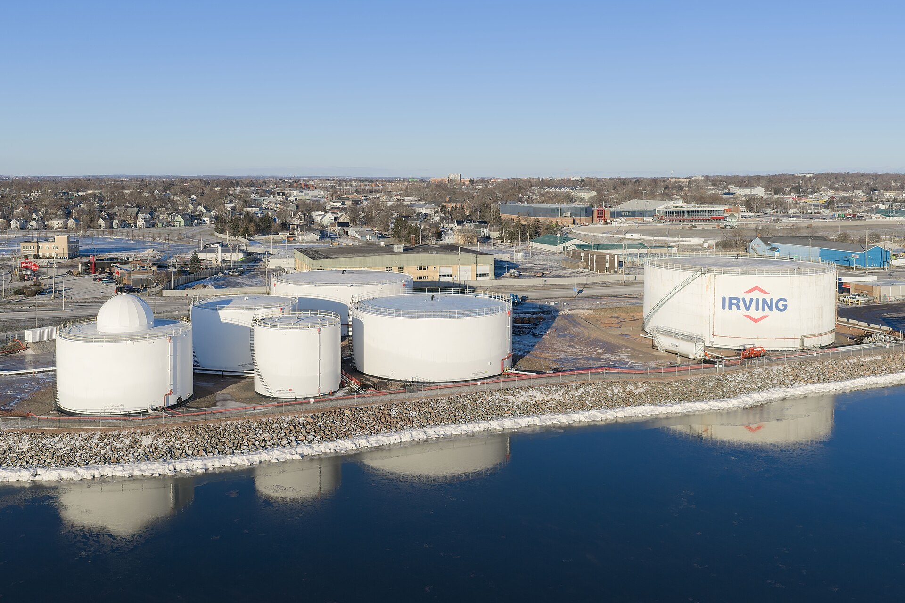

Ормузский пролив: экспорт нефти превысил довоенный уровень, несмотря на заявления Ирана о закрытии
По данным Kpler и Vortexa, экспорт нефти с Ближнего Востока в сентябре вернулся к довоенному уровню около 18 млн баррелей в сутки — на фоне роста атак на танкеры.

Экспорт нефти с Ближнего Востока в сентябре превысил довоенный уровень, несмотря на неоднократные заявления Ирана о закрытии Ормузского пролива. Данные судоходства Kpler и Vortexa показали это 5 октября.
Что говорят цифры
По данным Kpler, семидневная скользящая средняя на 30 сентября составила 18,3 млн баррелей в сутки, причём 14 дней сентября превышали довоенный уровень; довоенное 12-месячное среднее было около 18 млн барр./сут. Vortexa оценила 14-дневнее среднее в 18,6 млн барр./сут. Собственно через Ормуз проходило около 13,5 млн барр./сут — на уровне довоенной базы.
Экспорт самого Ирана рухнул
При этом сентябрь стал первым месяцем без иранских погрузок нефти с начала войны — против примерно 250 тыс. барр./сут в августе. Изменилась и логистика: более 70% нефти, прошедшей Ормуз в августе, перегружалось у берегов ОАЭ или Омана, а около 40% нефти теперь уходит вообще минуя Ормуз (против 17% до войны).
Атаки нарастают
Несмотря на рост объёмов, суда в проливе под угрозой. 1 октября танкер Kazimah III под флагом Кувейта (VLCC) был поражён неизвестным снарядом и загорелся; 4 октября танкер Lipsi (Aframax) был повреждён у берегов Омана. Экипажи в обоих случаях уцелели. По данным UKMTO, с 2 октября фиксируется не менее одной атаки в день. Служба морской безопасности Marisks отметила, что недавние инциденты «могут не обязательно означать преднамеренный выбор конкретных торговых судов в качестве цели».